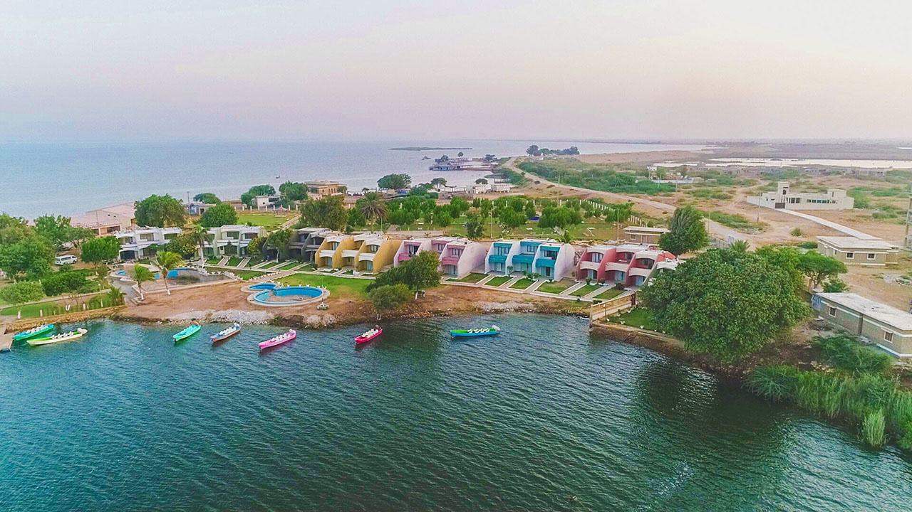

<div class="portfolio-single-load clearfix">
    <div class="custom-full-width-box">
        <div class="custom-container">
            <div class="custom-row align-items-center">
                <div class="custom-image-column">
                    
                </div>
                <div class="custom-text-column">
                    <h2 class="custom-heading">Keenjhar Lake, Thatta
                    </h2>
                    <p class="custom-paragraph">
                        Keenjhar Lake, also known as Kalri Lake, is Sindh's second-largest freshwater lake, spanning approximately 22 kilometers. Providing water supply to Thatta and Karachi, it offers serene views and recreational activities. Surrounded by palm trees and cabana-style huts, it's a popular destination for locals and tourists alike, especially during the summer months.

                    </p>
                </div>
            </div>
        </div>
    </div><!-- .custom-full-width-box end -->

</div><!-- end single-project -->
